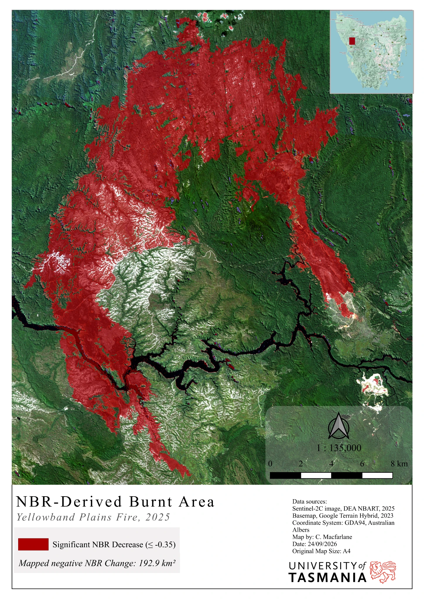

Remote Sensing | Environmental Monitoring
Mapping Bushfire Impacts Using Satellite Imagery
Yellowband Plains, Tasmania | 2026
This project investigated the spatial extent and severity of the 2025 Yellowband Plains fire in Tasmania using Sentinel-2 satellite imagery and remote sensing techniques.
Using pre- and post-fire imagery, I applied Normalised Burn Ratio (NBR) change detection to identify areas affected by fire. I also performed a supervised maximum likelihood classification to distinguish between moderate and high-severity burn areas.
Project Maps


Results
The NBR change detection analysis identified approximately 192.9 km² of significant negative NBR change, while the maximum likelihood classification mapped approximately 152.6 km² of moderate and high-severity burn areas.
The project demonstrates how multispectral satellite imagery and image classification techniques can be used to investigate environmental disturbances and map their spatial extent.
Techniques: Multispectral image analysis, NBR change detection, supervised classification, cartographic visualisation.
Project context: Academic project completed as part of postgraduate GIS studies at the University of Tasmania, 2026.
Software: ENVI, GIS mapping software.